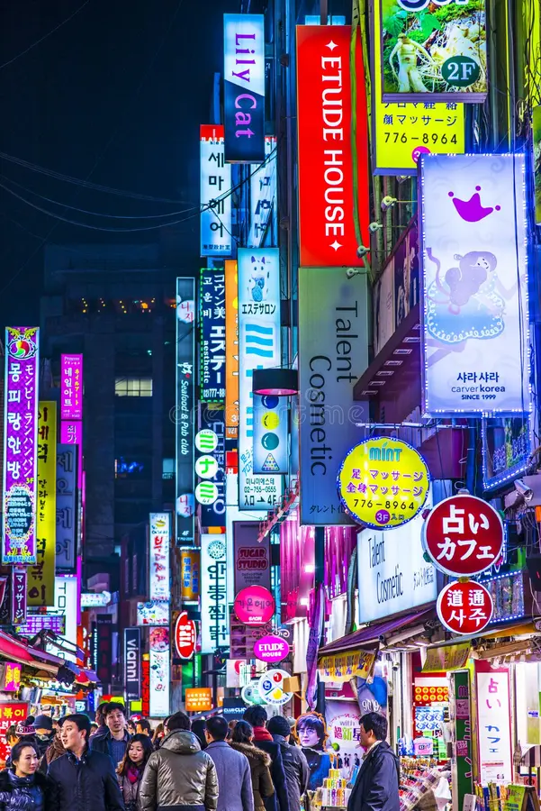

Seul é a capital e a maior cidade da Coreia do Sul.
Localizada no noroeste do país, ela é considerada o centro político, econômico, cultural e tecnológico da nação.
A cidade combina tradição e modernidade, reunindo palácios históricos, templos, mercados tradicionais e arranha-céus de alta tecnologia.
Entre os principais pontos turísticos de Seul estão o Palácio Gyeongbokgung, construído no século XIV, a Torre N Seoul, que oferece uma vista panorâmica da cidade, e o bairro de Myeongdong, famoso pelas lojas, cosméticos e comidas de rua.
Outro destaque é o distrito de Gangnam, conhecido mundialmente por seu desenvolvimento moderno e pela música "Gangnam Style".
Além das atrações turísticas, Seul é um importante centro da cultura sul-coreana, sendo um dos principais polos do K-pop, dos dramas coreanos e da gastronomia do país.
Seu sistema de transporte é moderno e eficiente, facilitando a locomoção de moradores e visitantes.
Dessa forma, Seul se destaca como uma cidade que preserva suas tradições enquanto acompanha os avanços tecnológicos do mundo contemporâneo.
